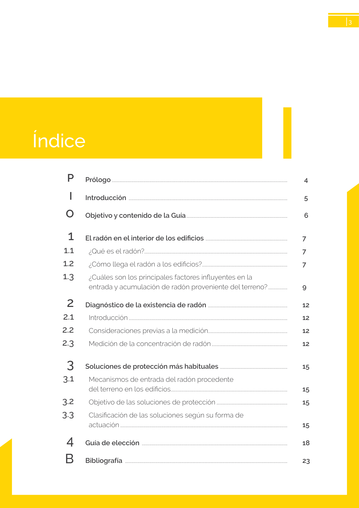

<!doctype html>
<html lang="es"><head><meta charset="utf-8">
<meta name="viewport" content="width=device-width, initial-scale=1">
<title>GUIA · p. 3 — Página 3</title><link rel="stylesheet" href="../estilo.css">
</head><body>
<nav><a href="../index.html">Índice</a> › <a href="../doc/guia-pdf-23d2f2198c3b-sin-fecha-6765d0c34c51.html">GUIA</a> › p. 3</nav>

<header class="meta">
<p><strong>GUIA</strong> · Página 3 · versión sin-fecha</p>
<p>SHA256: <code>6765d0c34c51fbe193c3ed0c1378b710f98f086d16e2b68fc28ed36e143fdaea</code> · página física 3 de 24 · métodos de encabezado
solo si están cotejados.</p>
<p><a href="../doc/guia-pdf-23d2f2198c3b-sin-fecha-6765d0c34c51.html">Documento</a> · <a href="guia-pdf-23d2f2198c3b-sin-fecha-6765d0c34c51__p0002.html">← p. 2</a> · <a href="guia-pdf-23d2f2198c3b-sin-fecha-6765d0c34c51__p0004.html">p. 4 →</a></p>
<p>Formatos: <a href="../../contenido/docs/GUIA-PDF-23d2f2198c3b/sin-fecha__6765d0c34c51/pagina/p0003.md">Markdown</a> · <a href="../../contenido/docs/GUIA-PDF-23d2f2198c3b/sin-fecha__6765d0c34c51/bloque/p0003.json">JSON de bloques</a> · <a href="../../contenido/docs/GUIA-PDF-23d2f2198c3b/sin-fecha__6765d0c34c51/fuente.pdf#page=3">PDF p. 3</a> · <a href="../../contenido/docs/GUIA-PDF-23d2f2198c3b/sin-fecha__6765d0c34c51/figura/p0003.png">imagen PNG</a></p>
</header>
<nav class="paginas"><a href="../doc/guia-pdf-23d2f2198c3b-sin-fecha-6765d0c34c51.html">Documento</a> <a href="guia-pdf-23d2f2198c3b-sin-fecha-6765d0c34c51__p0002.html">← p. 2</a> <a href="guia-pdf-23d2f2198c3b-sin-fecha-6765d0c34c51__p0004.html">p. 4 →</a></nav>
<h2>Encabezado de la página</h2><ul><li>Sin encabezado de fuente cotejada en esta página.</li></ul>

<pre class="literal">Índice
I
3
Prólogo...................................................................................................................................................	
 4
Introducción .....................................................................................................................................	
 5
Objetivo y contenido de la Guía....................................................................................	
 6
El radón en el interior de los edificios .................................................................... 
7
¿Qué es el radón?.......................................................................................................................	
7
¿Cómo llega el radón a los edificios?.......................................................................	
7
¿Cuáles son los principales factores influyentes en la
entrada y acumulación de radón proveniente del terreno?.................	
9
Diagnóstico de la existencia de radón ..................................................................	
12
Introducción.....................................................................................................................................	
12
Consideraciones previas a la medición..................................................................	
12
Medición de la concentración de radón................................................................	
12
Soluciones de protección más habituales ........................................................	
15
Mecanismos de entrada del radón procedente
del terreno en los edificios.................................................................................................	
15
Objetivo de las soluciones de protección............................................................	
15
Clasificación de las soluciones según su forma de
actuación............................................................................................................................................	
15
Guía de elección ..........................................................................................................................	
18
Bibliografía ........................................................................................................................................	
23
P 
I  
O
1 
1.1
1.2
1.3
2
2.1
2.2
2.3
3 
3.1
3.2 
3.3
4
B
</pre>
<figure><a href="../../contenido/docs/GUIA-PDF-23d2f2198c3b/sin-fecha__6765d0c34c51/figura/p0003.png"></a><figcaption>Imagen de la página 3 (PNG ya extraído; prevalece sobre fórmulas).</figcaption></figure>
<h2>Tablas candidatas de esta página</h2><ul><li><a href="../../contenido/docs/GUIA-PDF-23d2f2198c3b/sin-fecha__6765d0c34c51/tabla/p0003_t01.json">p0003_t01.json</a> · <a href="../../contenido/docs/GUIA-PDF-23d2f2198c3b/sin-fecha__6765d0c34c51/tabla/p0003_t01.csv">.csv</a> (1 × 2; candidata, no reconstruida aquí)</li></ul>
<h2>Referencias, notas y excepciones (página y vecinas)</h2><ul><li><a href="../apartado/guia-pdf-23d2f2198c3b-sin-fecha-6765d0c34c51__a0008.html">ID a0008 · Prólogo P</a></li></ul>
<h2>Apartados que incluyen esta página</h2><ul><li><a href="../apartado/guia-pdf-23d2f2198c3b-sin-fecha-6765d0c34c51__a0002.html">ID a0002 · sección HS6 Protección frente a la exposición al radón.</a></li><li><a href="../apartado/guia-pdf-23d2f2198c3b-sin-fecha-6765d0c34c51__a0003.html">ID a0003 · I</a></li><li><a href="../apartado/guia-pdf-23d2f2198c3b-sin-fecha-6765d0c34c51__a0004.html">ID a0004 · P I</a></li><li><a href="../apartado/guia-pdf-23d2f2198c3b-sin-fecha-6765d0c34c51__a0005.html">ID a0005 · O</a></li><li><a href="../apartado/guia-pdf-23d2f2198c3b-sin-fecha-6765d0c34c51__a0006.html">ID a0006 · B</a></li></ul>

<footer>Generado estáticamente desde JSON normalizado; sin JavaScript ni servicios externos.
El JSON es la fuente; este HTML es caché reproducible.</footer>
</body></html>
